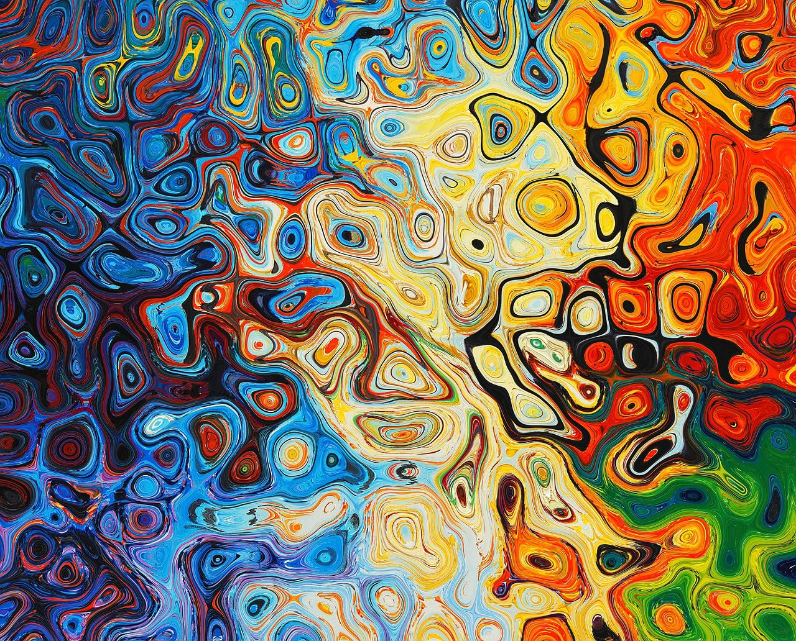
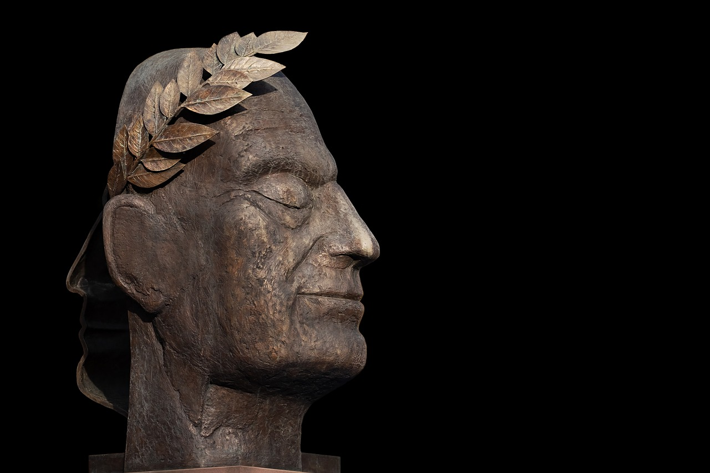

새로운 경험의 시작
ARTMUSEUM
"Art changes the way we see things,
Art dramatically changes our thinking"
아트뮤지엄은 현대미술과 서양미술, 시대적 가치를 반영한 국제미술이 함께 공존하는 세계를 향한 열린 미술관입니다. 과거와 현재를 바탕으로 미래를 함께 모색하고, 시대와 장르를 따지지 않고 소통하는 문화적 공간이 되고자 합니다.
-

과거
고대,중세,르네상스,바로크등의 미술의 공통점은 종교, 역사, 신화 등의 특정한 예술적 양식과 문화적 유산으로서 역사와 예술에 대한 이해를 풍부하게 합니다.
-

서양
시대와 문화의 다양성을 반영하면서도 지속적으로 발전하고 있으며, 다른 문화와의 상호작용과 영향을 받아 오늘날까지도 다양한 형태로 이어져 나가고 있습니다
-

조각
조각하는 과정을 통해 예술 작품을 창조하는 분야를 가리킵니다. 조각은 보통 돌, 나무, 금속, 석고, 흙 등 다양한 소재로 만들어지며, 입체적인 형태를 가지고 있습니다.
피카소의 "우는 여자"는 1937년에 제작된 유명한 작품으로, 스페인
출신 화가 파블로 피카소의 대표적인 작품 중 하나입니다. 이 그림은
피카소의 '기울어진 기간' 동안의 작품이며, 특히 스페인 내전과
그에 따른 고통을 표현한 그의 작업들 중 하나로 평가받습니다.
"우는 여자"는 이러한 테마를 더욱 개인적이고 집중적인 감정으로
다루며, 전쟁의 비극이 개인에게 미치는 영향을 극적으로
나타냅니다.
앤디 워홀(Andy Warhol, 1928-1987)은 미국의 화가, 프린트메이커,
그리고 영화 제작자로 대중문화와 예술의 경계를 허물며 20세기
미술계에 큰 영향을 끼친 인물입니다. 그는 대중문화의 상업적
이미지와 아이콘을 이용해 예술 작품을 창조함으로써 팝 아트 운동의
선두 주자로 널리 알려져 있습니다.
가장 유명한 작품들은 주로 그의 팝 아트 시대에 만들어진 것들로,
대중문화의 상징과 상업적 이미지들을 독특하게 재해석한
것들입니다. 여기 몇 가지 대표적인 작품들은 캠벨 수프 캔, 마릴린
디옵틱, 실버 캐러크,마오 등이 있습니다.
피카소의 "여인의 흉상(Buste de femme)"은 그의 여러 연인 중
하나인 도라 마르(Dora Maar)를 모델로 한 다수의 작품 중
하나입니다. 이 작품들에서 도라 마르의 이미지는 종종 왜곡되고
추상화되어 표현됩니다.
전통적인 미적 관념을 벗어난 형태, 강렬한 색채, 그리고 동적인
선을 이용해 복잡한 감정과 내면의 세계를 드러내려고 했습니다.
피카소의 초상화에서는 종종 눈, 코, 입이 비정상적인 위치에
배치되거나 얼굴의 한쪽이 다른 쪽과 매우 다르게 표현되는 것을 볼
수 있습니다.
- ARTMUSEUM
- SEOUL
- ARTMUSEUM
- SEOUL
- ARTMUSEUM
- SEOUL
- ARTMUSEUM
- SEOUL
- ARTMUSEUM
- SEOUL